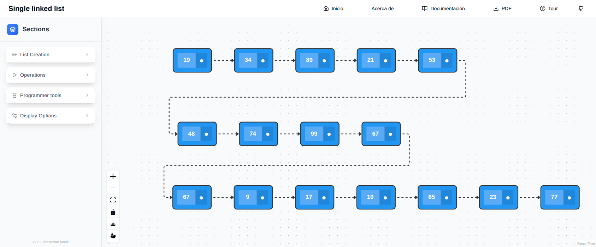

2 Funcionalidad
Las operaciones soportadas por la estructura de datos se pueden dividir en grupos:
- Creación. Comprenden las diferentes formas en que se puede crear una lista enlazada. Entre estas formas se incluye: vacía, de una secuencia de números o de manera aleatoria.
- Acceso. Son las operaciones que le permiten al programador acceder a los elementos almacenados por la estructura de datos. En el caso de las listas enlazadas es posible acceder al primer elemento, al último elemento.
- Modificación. Contiene las operaciones que adicionan o eliminan elementos de la estructura de datos. Algunos ejemplos de estas operaciones incluyen: inserción por el frente y por detrás; eliminación del primero y el último elemento.
La interfaz de usuario del simulador consta de tres partes identificadas en la siguiente figura.

La parte superior contiene una barra con el título y algunos enlaces de interés. Tal vez el más importante es el botón con el texto Tour en la parte superior derecha. Pulsar este botón activará una especie de tour por cada uno de los elementos de la interfaz gráfica y le proporcionará al usuario una idea de la funcionalidad de cada parte.
Las otras dos partes son las más importantes para la interacción con el programador. En la sección vertical izquierda se puede apreciar una barra de menús. En el caso de la figura todos ellos se encuentran colapsados y entre otros, presentan los títulos: List Creation, Operations, Programmer Tools y Display Options. Finalmente en la sección vertical derecha se encuentra el lienzo que es el lugar donde aparecen las representaciones gráficas. En este caso se aprecia una lista de números. En las secciones siguientes se muestra detalladamente cada una de las funcionalidades.
2.1 Creación
En el simulador las listas pueden ser creadas de diferentes maneras. Todas las opciones de creación se encuentran en el primer sub menu con el título List Creation.
Lista vacía
Para crear una lista vacía donde el usuario pueda comenzar a añadir elementos haciendo uso de las operaciones se debe hacer click en la pestaña Empty y a continuación hacer click en el botón Create Empty List (ver Figura 2.1). Al dar click en el aparecerá un mensaje en el lienzo de la derecha informando que la lista actualmente visualizada se encuentra vacía.
Lista con números aleatorios
La siguiente opción para crear una lista es con elementos aleatorios. Esto es especialmente útil cuando el usuario desea ver como se comporta una operación sobre una lista que ya contiene elementos y no desea insertarlos uno a uno. En esta opción es cuestión de seleccionar el número de nodos utilizando el elemento deslizante y posteriormente pulsar el botón Generate Random (ver Figura 2.2). Al presionar el botón aparecerá la lista en el lienzo de la derecha junto con sus elementos.

Lista personalizada
Cuando se requiere una lista con elementos específicos la tercera opción es la indicada. Haciendo click en Custom aparecerá un cuadro de texto para insertar cada uno de los elementos de la lista (ver Figura 2.2). El formato es simple: los elementos deben estar encerrados por los símbolos [y ]. Adicionalmente los números en la deben estar separado por comas. Por ejemplo, al introducir [1,2,3,4,5] se creará y visualizará la lista que contiene los elementos del \(1\) al \(5\).

2.2 Visualización de la lista
Después de creada la lista utilizando cualquiera de las formas mencionadas, está será visualizada en el lienzo que hay en la parte derecha. Por ejemplo, en la Figura 2.4 se muestra la interfaz con una lista creada de 5 elementos. En esta figura se encuentran las anotaciones muestran los diferentes nodos de la lista y los componentes de uno de ellos.

Existen diferentes formas de interactuar con la representación visual de la lista enlazada. Los nodos de la lista pueden ser reposicionados y su encadenamiento puede ser alterado. En la parte inferior izquierda del lienzo se encuentra una pequeña barra vertical con botones que tienen acción sobre la visualización del lienzo.
- El tercer botón de arriba a abajo permite siempre enfocar todos los elementos dentro del lienzo. Esto es de gran importancia porque facilita mucho la interacción con la visualización.
- El cuarto botón con el símbolo
 protege el lienzo de cualquier tipo de interacción. Esta opción es muy útil cuando se desean tomar imágenes de captura de pantalla o realizar explicaciones sin que se altere la visualización.
protege el lienzo de cualquier tipo de interacción. Esta opción es muy útil cuando se desean tomar imágenes de captura de pantalla o realizar explicaciones sin que se altere la visualización.
Cada nodo de la lista consta de dos partes como se identifican en la Figura 2.4. La primera contiene el dato y la segunda representa el apuntador al siguiente nodo en la lista. Cuando el mouse se posiciona sobre este último el apuntador es resaltado en un color diferente (ver Figura 2.5). Esto es útil cuando las listas no se muestran de manera lineal. A continuación se muestra la misma lista después de ser reorganizada arrastrando los nodos con el mouse sobre el lienzo. El puntero se posicionó sobre el nodo que contiene el valor \(14\).
2.3 Operaciones sobre listas
Después de tener la lista creada o una lista vacía podemos comenzar a realizar operaciones sobre ella. Esto con el fin de observar el comportamiento de cada una de ellas. Las operaciones disponibles se pueden acceder desde el menu Operations (ver Figura 2.6).

A continuación se describen las diferentes operaciones que pueden ser visualizadas sobre la lista. Todas ellas pueden ser accedidas desde el panel mostrado en la Figura 2.6.
2.3.1 Adición y borrado de elementos
En esta sección se define la manera de insertar y borrar elementos de la lista. Estas operaciones están disponibles en el menu Operations. En particular, las opciones de inserción se muestran en la Figura 2.7.

2.3.1.1 Inserción
Antes de cualquier inserción es necesario seleccionar el dato a insertar. Para esto se cuenta con el primer cuadro de texto.

Pulsando este botón que se encuentra al lado del cuadro de texto se generará ún valor aleatorio. Este valor será insertado por cualquiera de las operaciones.
Existen tres formas básicas de insertar elementos en una lista enlazada. Las tres pueden ser ejecutadas desde la interfaz gráfica visualizada en la Figura 2.8. La primera es insertar el nuevo elemento por el frente de la lista (opción marcada con 1 en la figura). Es decir, el nuevo elemento quedaría como nuevo primer elemento en la lista. Para esto se ingresa el valor a insertar en el campo de texto Target Value y se procede a dar click en el botón mencionado. Al hacerlo el nuevo nodo se posicionará al inicio de la lista y tendrá un color diferente.

En la Figura 2.9 se muestra como queda la lista después de la inserción por el frente del elemento \(45\) sobre una lista inicializada de manera aleatoria. Se puede apreciar que el elemento queda en un nodo con un color diferente. En este caso de color verde.

Para insertar un elemento por el final de la lista se procede de forma similar. Esta vez se debe tener en cuenta que hay dos formas de hacerlo (denotadas como 2 y 3 en Figura 2.8). La primera es recorriendo la lista desde el comienzo: opción 2. Al pulsar el botón marcado en la figura se verá de manera animada el recorrido sobre la lista y la posterior adición del nodo con el elemento seleccionado al final de la misma.
Finalmente también es posible insertar un elemento utilizando el puntero al final de la lista (opción 3 de la Figura 2.8). Durante esta inserción no se observará recorrido, el elemento se insertará al final de la lista.
Los nodos insertados se colorean del color definido en el campo New node en el menú Display Options. Esto se hace con el fin de poder diferenciar los nodos anteriores del nuevo nodo. En cualquier momento se puede utilizar Tip 2.2 para modificar el color de cualquier nodo.

En cualquier momento es posible cambiar el color de los nodos de la lista utilizando la funcionalidad del menu Display Options presentado a la izquierda. En este caso se seleccionan en el lienzo los nodos a los que se les desea cambiar el color. Posteriormente se selecciona el color que aparece al lado del botón Apply y se pulsa este último.
Es importante destacar que el simulador incluye operaciones que no necesariamente hacen parte de las estructuras de datos utilizadas en producción (por ejemplo en el desarrollo de aplicaciones comerciales). Lo anterior sucede cuando la operación tiene una intensión pedagógica o llega a ser un paso intermedio para deducir otra operación (ver Tip 2.3).

El símbolo de advertencia en la parte superior derecha de algunos botones (como el que aparece en la figura de la izquierda) representan funcionalidad que académicamente es relevante pero que debe ser evitada en código de producción.
2.3.1.2 Borrado
Para eliminar un elemento de la lista existen dos operaciones mostradas en la Figura 2.10. Con la opción 1 se removerá el primer elemento de la lista. Después de pulsarlo se mostrará de manera animada sobre el lienzo. La opción 2 es para remover el último elemento. Para esta operación se muestra todo el recorrido desde el inicio hasta el penúltimo elemento de la lista (que se convertirá en el nuevo último).

2.4 Herramientas de programador
Una característica importante que tiene este módulo de visualización es la separación de conceptos. Por ejemplo, una lista, conceptualmente, es una secuencia de elementos. A nivel de programación surgen algunos conceptos que son importantes a la hora de implementar esta secuencia. Por ejemplo, se hace necesario hablar de punteros y direcciones de memoria. Por esta razón el simulador incluye un conjunto de herramientas en el menú Programmer Tools que se muestra en la Figura 2.11.

2.4.1 Apuntadores al primer y último nodo
El botón Show head and tail pointers hará visibles los punteros al primer y último elemento en la lista. Hasta ahora las listas que se han mostrado como la de la Figura 2.10 no tienen esta opción activada. Es posible apreciar la diferencia con la lista que se muestra en la Figura 2.12. Los nodos naranja representan cada uno de los punteros. Si el usuario localiza el puntero del mouse sobre alguno de ellos la conexión se resaltará.

2.4.2 Apuntadores adicionales
Durante el diseño de una operación sobre listas es siempre importante considerar el movimiento de los punteros. Incluso operaciones como remover un elemento en una posición de la lista usan punteros adicionales. Para este tipo de operaciones la aplicación cuenta con la funcionalidad de crear nodos de tipo apuntador. Esto se logra haciendo click en el botón Add pointer (ver Figura 2.11). Cuando se pulsa este botón se adiciona un nuevo nodo circular al lienzo y este se puede conectar a cualquiera de los nodos de la lista.

La Figura 2.13 muestra una lista que incluye los punteros a la cabeza y a la cola. Adicionalmente también hay dos punteros llamados \(P\) y \(Q\) que apuntan al segundo y al cuarto elemento.
Los punteros pueden ser reposicionados utilizando el mouse y arrastrando la conexión a otro nodo. Haciendo doble click sobre el nodo es posible cambiar el nombre del puntero. Esto es muy útil en labores de enseñanza.
2.5 Otras operaciones
La aplicación cuenta con algunas funcionalidades que no son propias de las estructuras de datos pero si lo son de la enseñanza y el aprendizaje. Por ejemplo, en el Tip 2.1 se observa la barra de herramientas que tiene el lienzo en su parte inferior izquierda.
- El botón
 exporta el lienzo en su estado actual a un archivo de imagen con extensión png.
exporta el lienzo en su estado actual a un archivo de imagen con extensión png. - El botón
 activa la opción de puntero, la cual actúa como un señalador y ayuda a la comunicación efectiva de las ideas. El puntero del mouse va a estar acompañado de un punto rojo de color atractivo. Para desactivarla se debe dar click de nuevo en el mismo botón.
activa la opción de puntero, la cual actúa como un señalador y ayuda a la comunicación efectiva de las ideas. El puntero del mouse va a estar acompañado de un punto rojo de color atractivo. Para desactivarla se debe dar click de nuevo en el mismo botón.